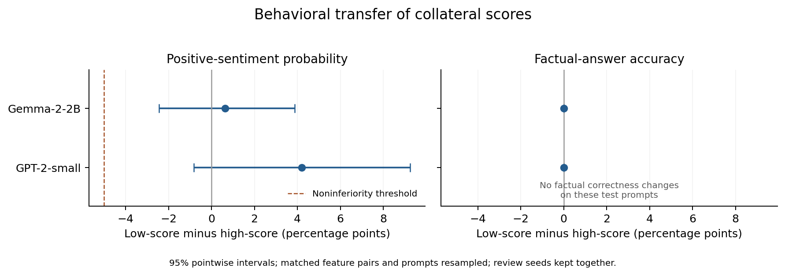

We evaluated transfer of the collateral predictor to positive-sentiment steering and unrelated synthetic factual retrieval in GPT-2-small and Gemma-2-2B. The predictor was fitted to the 300 canonical activation-collateral labels in each setting, using only unsteered feature statistics as inputs. Candidate features were excluded from all three original feature samples. Development generations selected six low/high predicted-collateral feature pairs matched on sentiment gain, with additive strengths 1 and 2 in GPT-2 and Gemma, respectively. Six remaining sentiment-associated features were sampled as controls. Held-out evaluation used 64 review prompts with two sampling seeds and 64 factual prompts per feature or unsteered baseline, yielding 3,648 outputs per model.
| Setting | Low-minus-high positive probability, pp [95% CI] | Low-minus-high factual accuracy, pp | Factual accuracy in every arm |
|---|---|---|---|
| GPT-2-small | +4.2 [-0.8, +9.2] | 0.0 | 96.9% |
| Gemma-2-2B | +0.6 [-2.4, +3.9] | 0.0 | 100.0% |
Intervals resample matched feature pairs and prompt identities, retaining the two review seeds together. Both settings satisfy the exploratory -5 percentage point sentiment noninferiority margin, but neither shows a factual-preservation advantage: correctness is identical across steering arms for every factual prompt. The joint transfer criterion is therefore unmet. In Gemma, neither selected arm improves mean held-out positive probability relative to the unsteered baseline, despite qualifying development gains. These results do not establish useful behavioral steering from this selector.
A secondary blinded Qwen3-4B assessment covered four fixed product-review prompts per feature and baseline, using one generation seed (76 outputs per model). Only 50% of GPT-2 low- and high-score outputs jointly passed positive-sentiment, coherence and relevance criteria; both Gemma groups scored 100% on this subset. These automated ratings have no human validation and cover a single prefix template. They illustrate why a sentiment score alone cannot establish generation quality.
The factual benchmark shows no intervention-induced correctness changes, so its zero-width empirical difference intervals do not establish general equivalence or preserved capability. The experiment uses one behavior, two fixed dictionaries, six feature pairs per setting and repeated generation-time steering; it is not a general behavioral validation of the original final-token activation measure. Any harder preservation benchmark or new selection rule should be evaluated in a separately frozen follow-up with fresh held-out prompts.
The joint behavioral-transfer criterion is not met; report uncertainty and the observed tradeoff.
Coefficient 1; 6 low/high feature pairs; 6 random candidate features; 3,648 held-out outputs. Each feature has 64 review prompts with two seeds and 64 factual prompts. Development factual accuracy: 96.9%.
| Selector | Features | Positive probability | Positive rate | Positive and nondegenerate | Factual accuracy | Degenerate reviews |
|---|---|---|---|---|---|---|
| unsteered | 1 | 76.5% | 76.6% | 76.6% | 96.9% | 0.0% |
| low | 6 | 81.3% | 81.4% | 81.2% | 96.9% | 0.1% |
| high | 6 | 77.1% | 77.2% | 77.0% | 96.9% | 0.4% |
| random | 6 | 78.5% | 78.6% | 78.5% | 96.9% | 0.1% |
Low-score minus high-score differences, with 95% pointwise feature/prompt bootstrap intervals:
Intervals resample matched feature pairs and prompt identities, retaining both review seeds together. A promising result requires the lower interval bound for sentiment difference to exceed -5 percentage points and the lower bound for factual accuracy to exceed zero.
Evidence: all generated outputs, feature results, frozen selection, complete analysis, fixed output examples.
The joint behavioral-transfer criterion is not met; report uncertainty and the observed tradeoff.
Coefficient 2; 6 low/high feature pairs; 6 random candidate features; 3,648 held-out outputs. Each feature has 64 review prompts with two seeds and 64 factual prompts. Development factual accuracy: 100.0%.
| Selector | Features | Positive probability | Positive rate | Positive and nondegenerate | Factual accuracy | Degenerate reviews |
|---|---|---|---|---|---|---|
| unsteered | 1 | 78.1% | 78.1% | 78.1% | 100.0% | 0.0% |
| low | 6 | 77.7% | 77.7% | 77.7% | 100.0% | 0.0% |
| high | 6 | 77.0% | 77.1% | 77.1% | 100.0% | 0.0% |
| random | 6 | 76.7% | 76.7% | 76.7% | 100.0% | 0.0% |
Low-score minus high-score differences, with 95% pointwise feature/prompt bootstrap intervals:
Intervals resample matched feature pairs and prompt identities, retaining both review seeds together. A promising result requires the lower interval bound for sentiment difference to exceed -5 percentage points and the lower bound for factual accuracy to exceed zero.
Evidence: all generated outputs, feature results, frozen selection, complete analysis, fixed output examples.

Pointwise 95% bootstrap intervals resample matched feature pairs and prompt identities. Review seeds stay together. Factual correctness is identical across all arms on these prompts.
The estimated sentiment difference is +4.2 percentage points in GPT-2 (95% CI -0.8 to +9.2) and +0.6 in Gemma (-2.4 to +3.9). Both satisfy the exploratory -5 point noninferiority margin; neither shows an advantage in factual preservation. Zero-width factual difference intervals reflect identical observed outcomes and do not establish general equivalence.
Qwen3-4B independently assessed four fixed product-review prompts per evaluated feature, using the first generation seed. These four prompts share one prefix template. Arm labels, feature IDs, intervention strengths and original scores were hidden from the judge. Rates below are descriptive checks on this small fixed subset, not additional success criteria.
Sentiment calibration: 100.0% on 32 separate sentences. Assessed 76 held-out outputs.
| Selector | Outputs | Positive | Coherent | On topic | All three | Sentiment agreement |
|---|---|---|---|---|---|---|
| unsteered | 4 | 100.0% | 50.0% | 100.0% | 50.0% | 100.0% |
| low | 24 | 91.7% | 50.0% | 79.2% | 50.0% | 91.7% |
| high | 24 | 95.8% | 54.2% | 87.5% | 50.0% | 95.8% |
| random | 24 | 91.7% | 62.5% | 100.0% | 54.2% | 91.7% |
Sentiment calibration: 100.0% on 32 separate sentences. Assessed 76 held-out outputs.
| Selector | Outputs | Positive | Coherent | On topic | All three | Sentiment agreement |
|---|---|---|---|---|---|---|
| unsteered | 4 | 100.0% | 100.0% | 100.0% | 100.0% | 100.0% |
| low | 24 | 100.0% | 100.0% | 100.0% | 100.0% | 100.0% |
| high | 24 | 100.0% | 100.0% | 100.0% | 100.0% | 100.0% |
| random | 24 | 100.0% | 100.0% | 100.0% | 100.0% | 100.0% |
Use the original duan environment and existing model cache. The source repository path is configured in run.py. Read PROTOCOL.md before running.
python run.py --setting gpt2_small --stage all
python run.py --setting gemma_2_2b --stage all
python blind_judge.py
python analyze.py
python verify.py
python -m pytest -q test_followup.py
The runner saves progress per generation and resumes completed jobs. Remove results only in a separate copy to obtain an independent rerun. Prompt generation, score coefficients, source hashes and package versions are saved alongside the results.
Both setting audits pass. The saved experiment contains 7,296 held-out outputs and 456 secondary criterion judgments on 152 fixed continuations. Seven regression tests passed on 18 September. Predictor reconstruction errors are below 4 × 10-15; all feature ranks agree exactly.
Source files: RESULTS.md, PAPER_ADDENDUM.md, VERIFICATION.json, PROTOCOL.md, SECONDARY_JUDGE_PROTOCOL.md, AMENDMENTS.md and STATUS_2026-09-18.md.